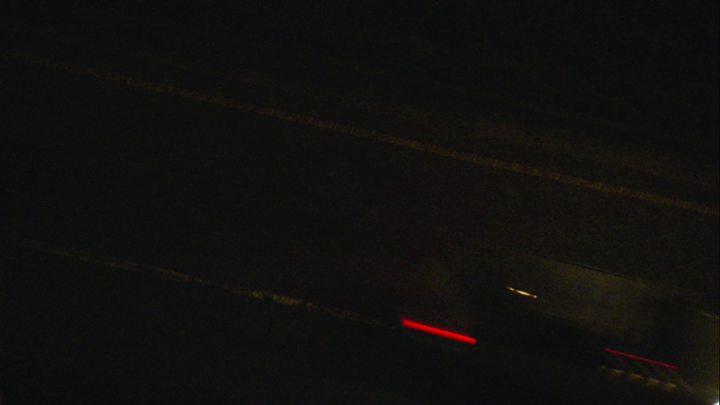
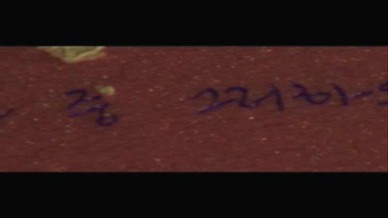
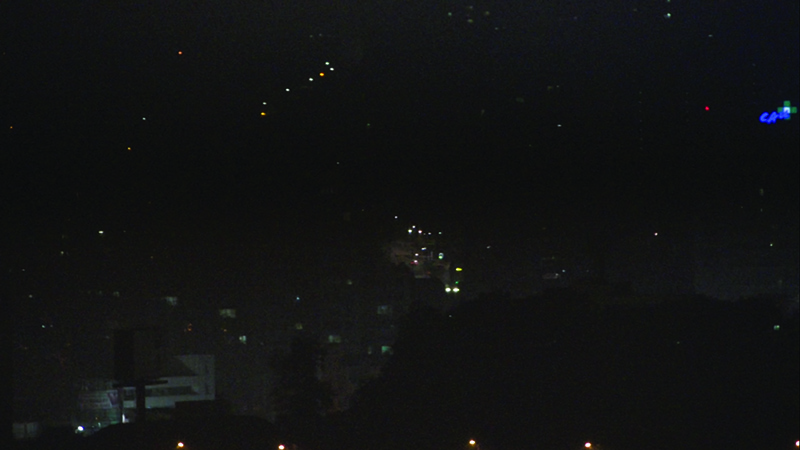
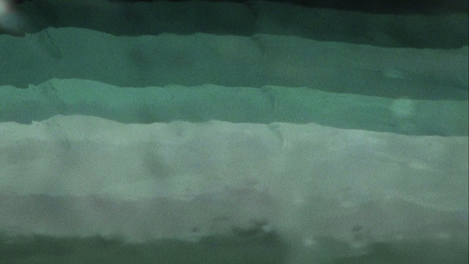
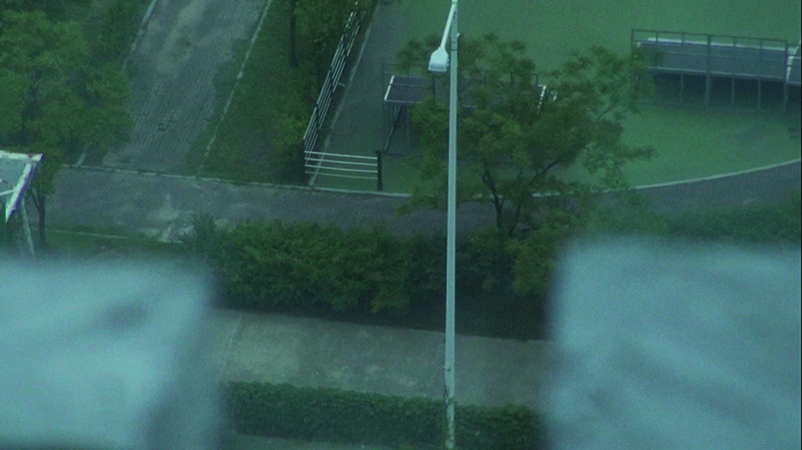
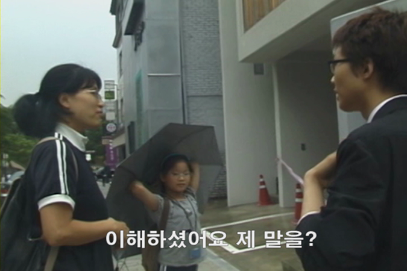
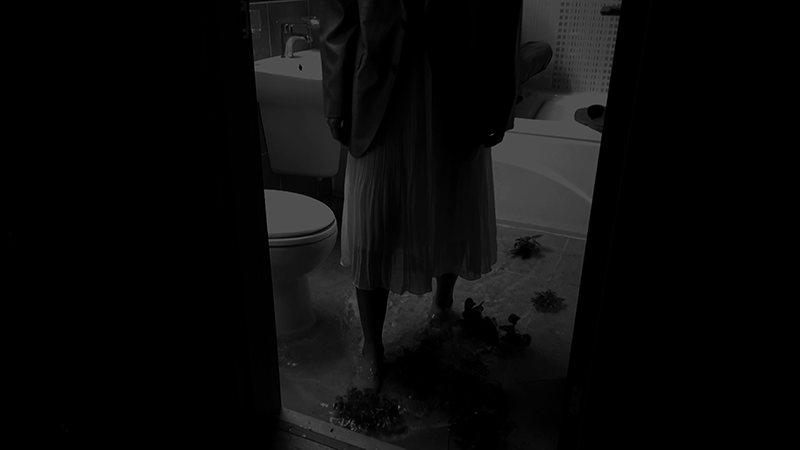
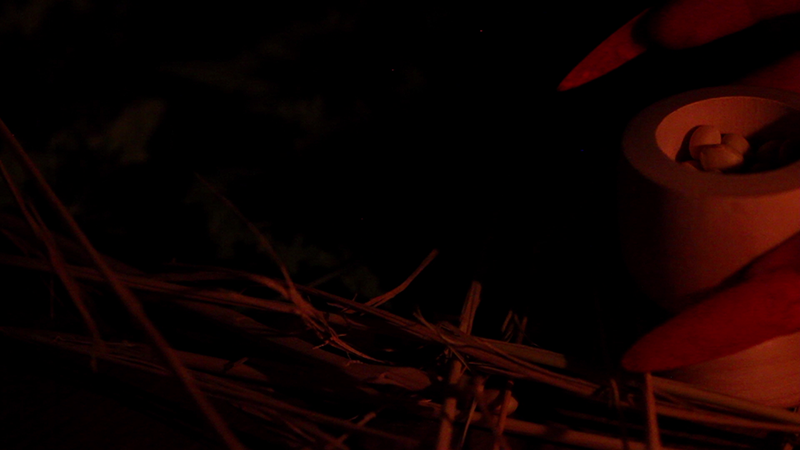
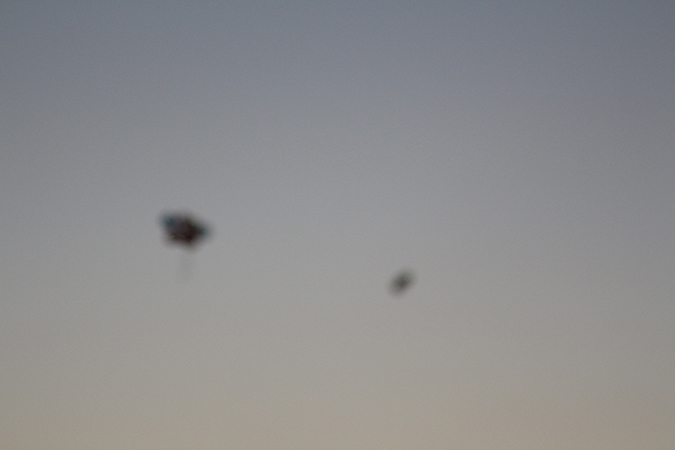
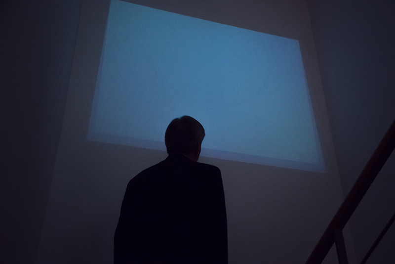

- 2015. 8. 19. 20:00
- 오페라 코스트
- 최영인 Choi young-in
- 최영인의 영상에 등장하는 입체는 각각의 작동 법을 갖고 있다.
이 입체들이 갖는 공통적인 특징은 똑같은 모양의 입체가 여러 개 있다는 것이다.
그것들은 하나로서, 어떠한 일을 수행하기도 하고, 한 데 모여 일을 수행하기도 한다.
최영인은 이런 입체들을 비스킷이라 부른다. 비스킷이 벌이는 일은 생김새에 맞는 일이 있는가 하면, 생김새와는 맞지 않은 일이 있다.
작가는 사건들 속에 비스킷이 겪는 고군분투를 영상에 담아낸다.
- <우물 Well>, 2'47'', 2012
- 물을 길어 올리기에 적합할지 모를 것으로 물을 길어 올린다. 얕은 곳에 있는 것 같던 물은 끝까지 올라오는 데 시간이 조금 걸린다.
- <승천 Ascension>, 5'42'' 2012
- 용을 실내에서 승천시켜 보도록 한다.
- <세수 Washing face>, 7'48'', 2014
- 주인공이 ‘사건’을 반추할 때마다, 주인공은 꿈속에서 세수를 한다. 하지만 세수하기가 순탄치 않다.
- <소포 (욱이어머니께 욱이가) Package (Dear mother from uk)>, 20'47'', 2013
- “오늘도 물동이 하나가 깨졌다. 이름은 오욱. 욱은 습관처럼 말하는 것들이 있었다.
어머니가 편찮으시니 깨져도, 고향으로 물건을 보내지 말아달라는 것. 지붕기와의 흠이 꼭 글씨 같지 않느냐는 것 등.
땅에 욱을 묻고, 물건을 보내려하니, 깨진 물동이가 가지고 있는 물건들은 아무것도 없었다.
없어도 있는 것을 세면, 임시처소로 썼던 지붕의 기와와 남아있는 물동이들뿐이었다.
기와, 물동이 그리고 사람이 어제와는 다른 쓰임으로 욱의 어머니께, 욱이 인 채하며 소포를 보낸다.”
-

-

-

-

-

- 20:45
- 오페라 코스트
- 함금엽 Hahm Guem-Yeop
- "무언가 열심히 말하고 있는데도 어느 것 하나 제대로 말한 적이 없는 기분이다.
듣고 있는 당신의 잘못이라고 생각하지는 않는다.
주먹을 꽉 쥐고 삶의 주체로 서라는 명령 앞에서 나는 한 번의 눈길이 영화가 될 수는 없을까하고 빤들대는 중이니까.
그렇지만 나도 가끔씩 어두운 밤 외장하드 속에 널브러진 영상의 시신들을 보자면 무서운 기을 감추기 어렵다."
- <댕기열의 진실The Truth of Dengue>, 4'10'', 2009
- 댕기열의 진실은 무엇일까?
- <리-라이트 Re-Light>, 8', 2011
- 산비탈에서 실족한 남자에 관한 이야기.
- <울트라마린 프로젝트Ultramarine Project>, 21', 2012
- 권태가 꾸는 두려움의 꿈. <Homecoming>, <Bath Quotes>, <Hydrostat>세 편의 비디오로 이뤄져 있다.
- <에피그람스 Epigrams>, 7', 2012~2015
- 하나의 경구로 출발해서 모르는 곳으로
- <동방유람Looking at Dawn>, 6', 2015
- 미래를 기다리는 사람들과 함께하기
- <댓 스틱키 스멜 오브 히스토리 That Sticky Smell of History>, 15', 2015
- 시놉시스를 제공하지 않습니다.
- <잠든 당신 You, Sleeping: Chapter 1&2>, 8', 2015
- 말을 거는 화이트큐브의 몽상과 미술관의 사정
- <야간출조 Sashimi Night>, 6', 2015
- 나는 회는 별론데, 횟집은 좋아해. 너도 그러니?
-

-

-

-

-
